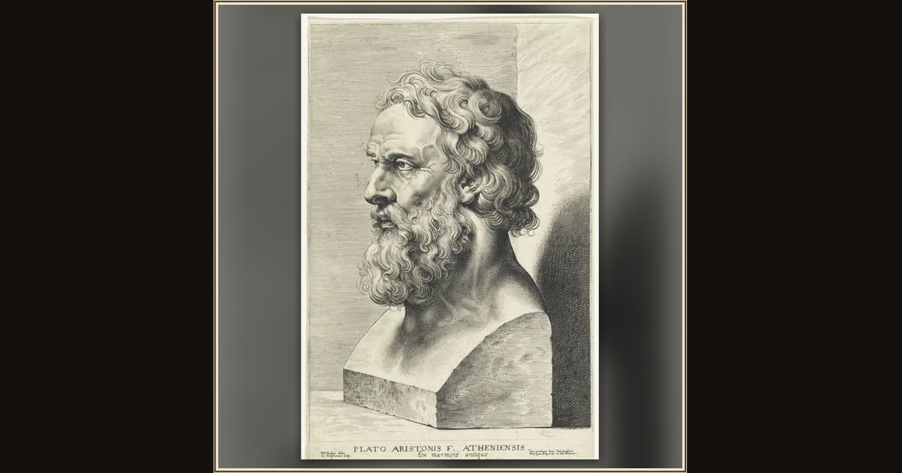

Buste van Plato
Lucas Vorsterman (I), after drawing by Peter Paul Rubens · 1630 - 1638 · rijksmuseum
An engraving of a bust inscribed as Plato, son of Ariston, of Athens, follows Rubens' drawing; Plato's letter recalls his first arrival at Syracuse at about forty (324b) Explore its place in Plato's Dialogues, Letters, section 80.